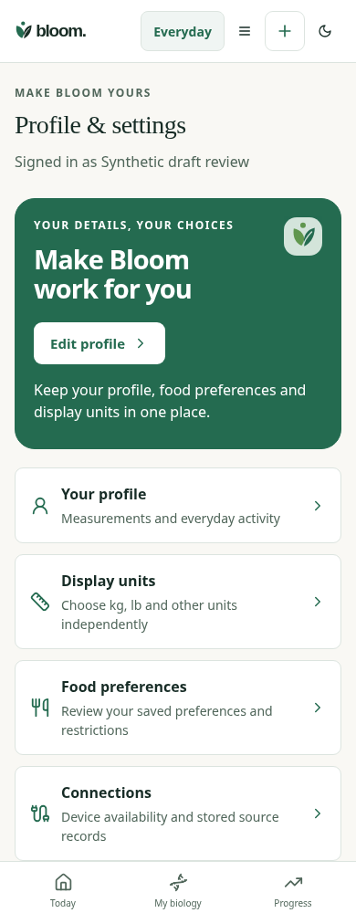
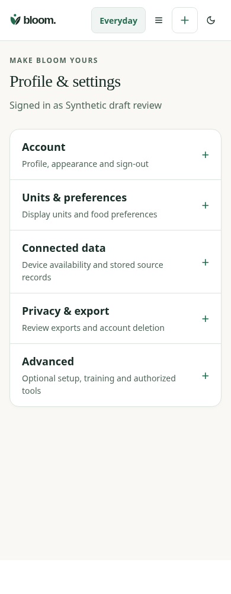

Matched synthetic Profile,390px light. Before:5842480. Original forms and independent unit/source values remain.


12Collapse retains unsaved measurement drafts. Legacy direct hashes open the correct group, units do not submit the Profile form, and closing Privacy clears the password. Browser automation does not imply independent Design or physical VoiceOver approval.